HOMELAND
Solheim
Golden fields and low alabaster walls under an endless dawn. Many peoples pass through, but most who call it home are human.
Summon the Aether Codex from a printed sigil card, open its eight shards, and carry the Wyrendal Dominion into your own room.
“Once, the Wyrendal Dominion was a single nation, at peace. Then came the Rupture, and when it was over, the Aetherforge Spire stood at the heart of it all.”
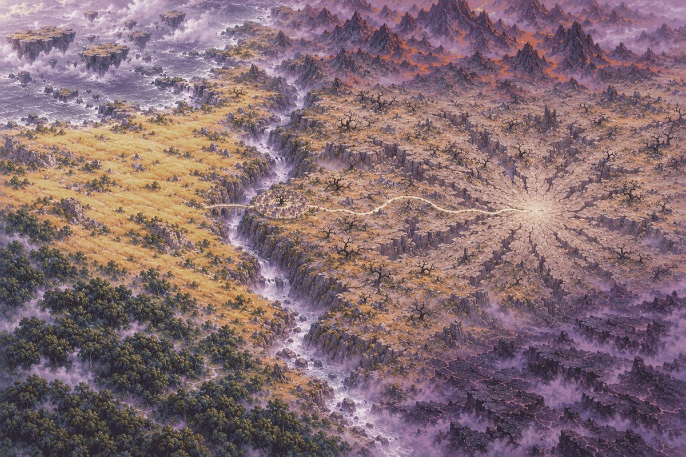
Anchor. Point your phone at the printed Aether Sigil card.
Summon. Tap the card. The relic rises from it with a chime, ringed by eight glowing shards.
Select. Tap a shard to open its Codex card. Teal shards are Homelands, violet shards are Artifacts.
Read. Each card shows the place or artifact, its lore and artwork, right above the relic.
Place. Artifacts leave the card: hang Shadowglint on a real wall, lay the Aether-woven Rug on your floor.
Collect. Each shard dims with a check. Gather all eight for Codex Complete!
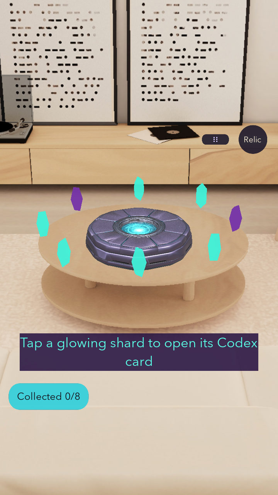
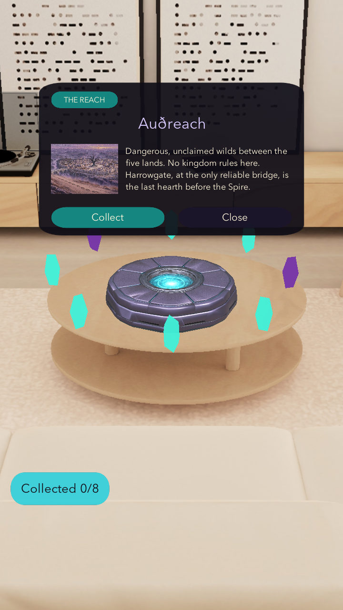
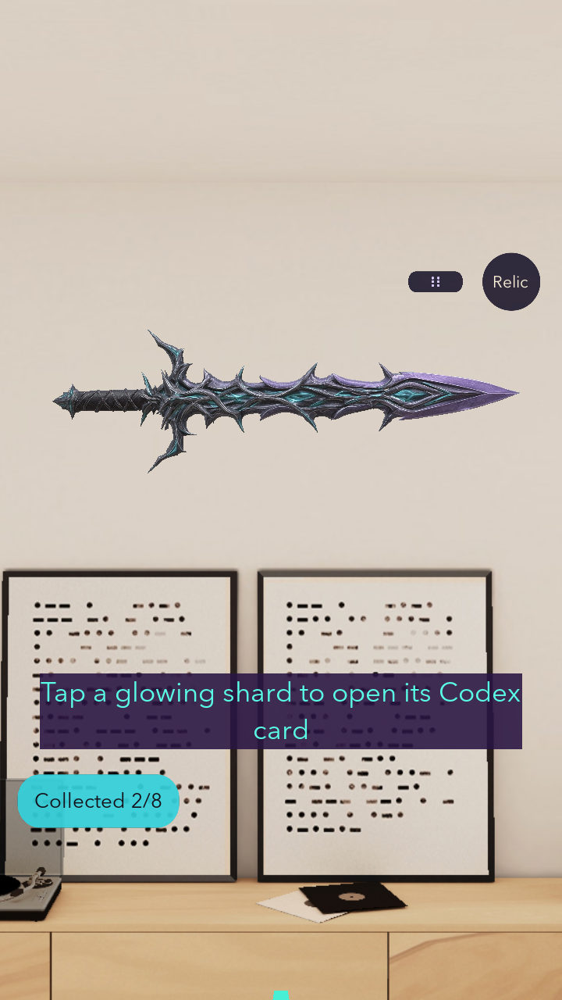
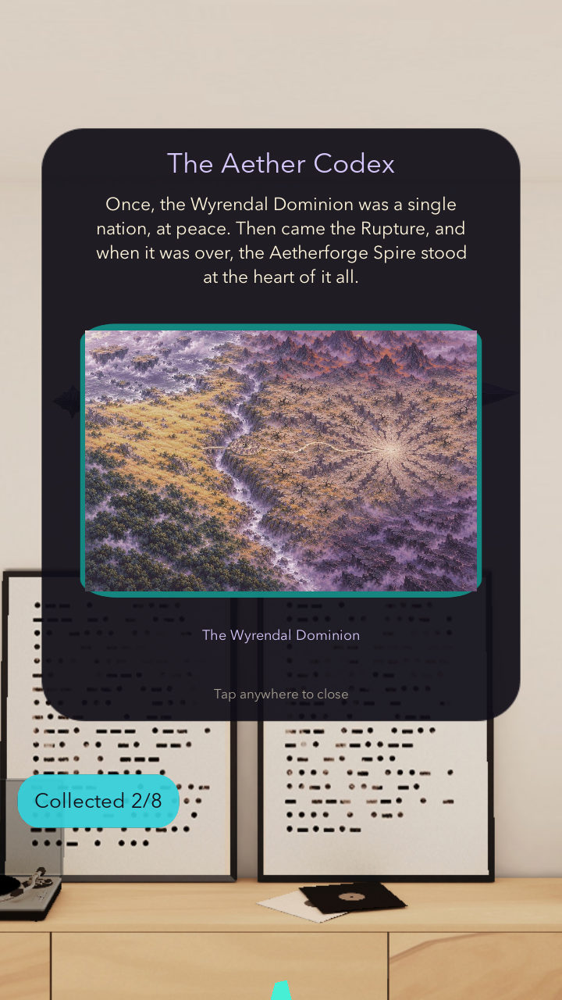
Golden fields and low alabaster walls under an endless dawn. Many peoples pass through, but most who call it home are human.
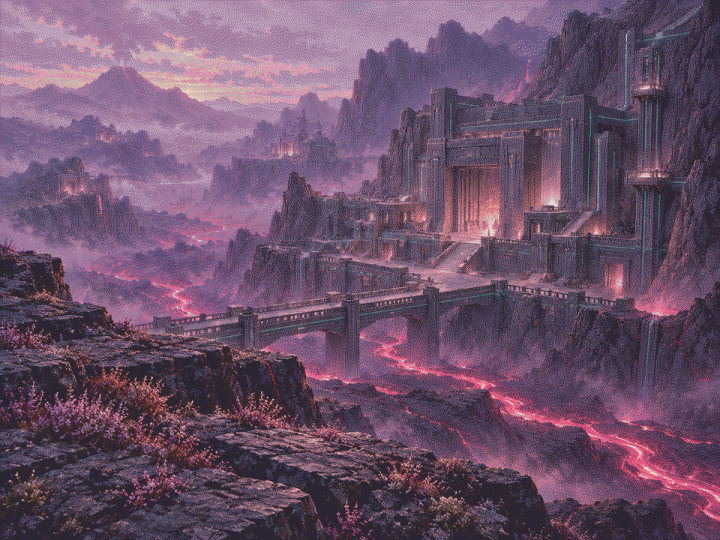
Volcanic peaks, rivers of lava and stone forge halls. The forges belong to the dwarven clans, who have made these mountains their own.
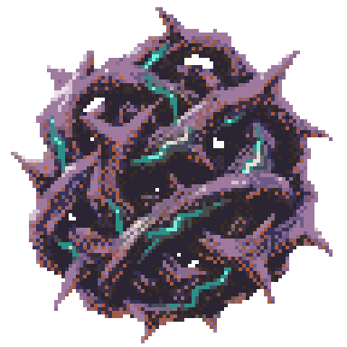
“Then carry the truth you'd rather no one saw,” it says, and the weapon grows from thorn and shadow. A shadow gift of the Aetheryl.
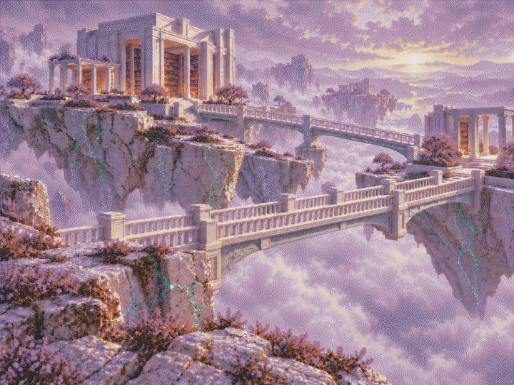
Floating islands and carved libraries beneath silver-lavender storms. Seekers of every kind come to study, though most scholars are human.
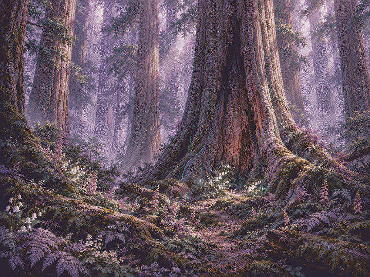
Moonlit canopies, spirit glades and trees that whisper. These ancient forests are the home of the elves.
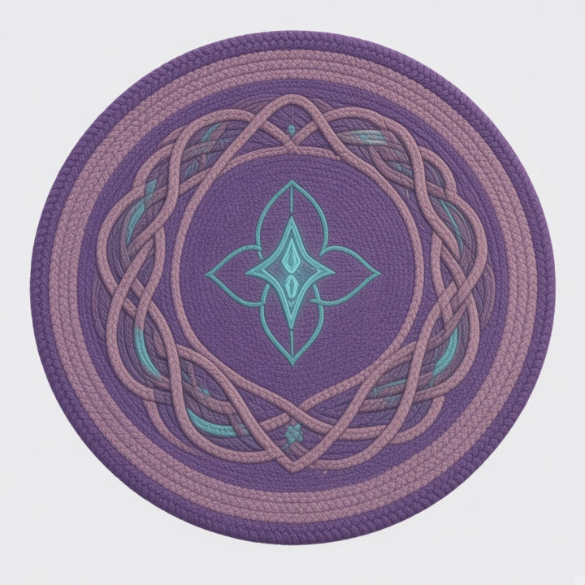
Woven from veilweave, the Dominion's fine hex-weave cloth, threaded with aether that glows teal in the dark.
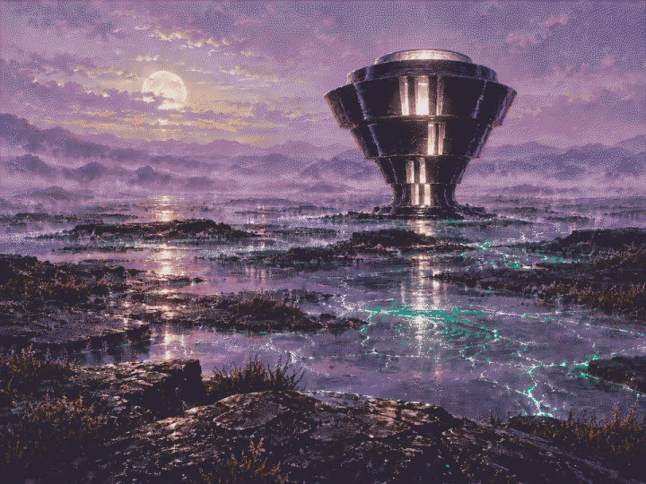
Obsidian plains lost in violet fog, where moon-temples stand among pools of hot violet water. A hard land, settled by hardy human folk.
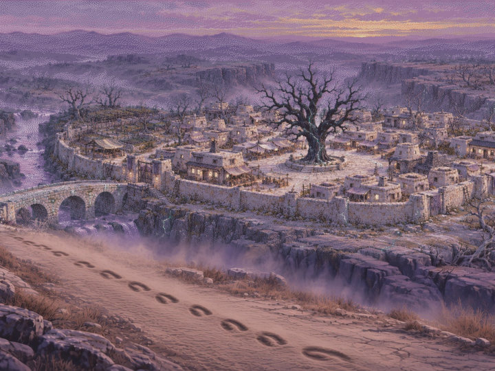
Dangerous, unclaimed wilds between the five lands. No kingdom rules here. Harrowgate, at the only reliable bridge, is the last hearth before the Spire.
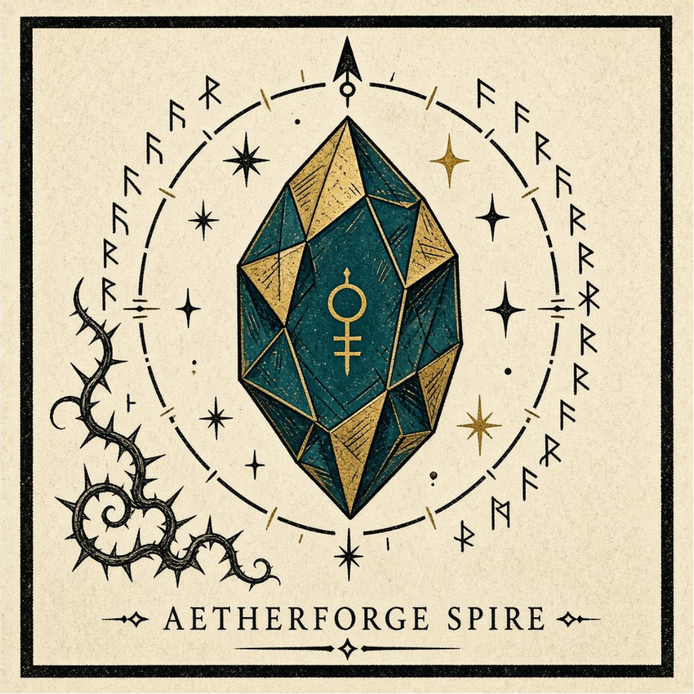
AetherLensController.tsThe core loop: state machine, tap routing, collecting, reset.MarkerRelicController.tsSigil card tracking, tap-on-card, the relic's summon pop.ShardRing.tsThe eight shards: colours, animation, tap picking.CodexCardView.tsThe floating Codex card, checkmarks and the Collected counter.CodexData.tsThe eight Codex entries and their lore.RoomPlacementController.tsReal-world hit tests; sword on a wall, rug on the floor.RelicEffects.tsSpin, Speed, Orbit, Bounce, Glow, Light, rug grow, sounds.RelicMenuController.tsThe draggable Relic menu and the Lore card.UiFactory.tsShared UI helpers and colour palette.